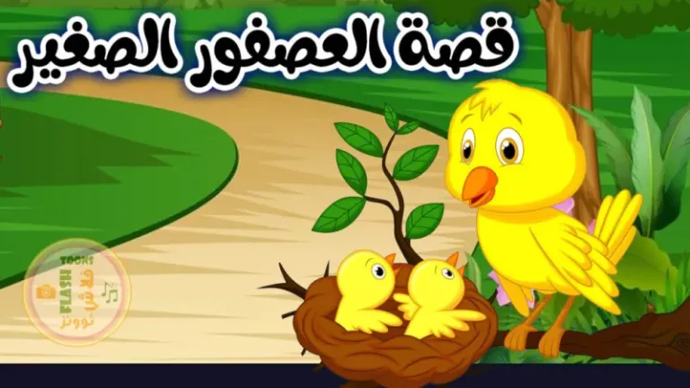

أهلا ومرحباً بكم متابعينا الكرام متابعي صفحة قصص اطفال قصة اليوم بعنوان قصة العصفور الصغير
قصة جميلة وتثير انتباه الاطفال ونهايتها رائعة
ولمتابعة المزيد من قصص اطفال جديدة و قصص اطفال مكتوبة يمكنكم زيارة صفحة قصص اطفال قبل النوم

كان يا مكان كان هناك عش لعائلة صغيرة من العصافير داخل شجرة كبيرة
و في يوم من الأيام ذهب الوالدان لإحضار الطعام لصغارهم و أخبروهم بعدم الابتعاد أو الطيران من العش
لأنهم مازالو صغار ولا يمكنهم الطيران.
و بعد وقت قصير شعر أحد الصغار بالملل فقال لأخوته أنه يريد أن يغادر العش ليذهب مع والديه.
فقال له أحد إخوته أن لا يفعل ذلك و عليه أن يطيع أمر أبويه ولكنه لم يسمع لكلامه
و قفز من العش لكي يطير فسقط على الأرض و انكسر جناحه.
وأثناء ذلك لاحظه بعض الصبية الذين كانوا يلعبون في المكان و لاحقوه فهرب منهم و شعر بالخوف الشديد.
وهموا أن يأخذوه ويضعوه في قفص، فنصحهم أخوهم الأكبر بعدم المساس به وتركه حتى يأتي أبواه العصفوران ويأخذانه.
و لما عاد أبواه وجداه يصيح مستنجدا بهم فحملاه من جناحيه.
وعندما وصلوا للعش نصحه أبواه بألا يخالف أمرهما مرة أخرى.
وعندها شعر العصفور الصغير بالندم و اعتذر لوالديه.
قال رسول الله صلى الله عليه وسلم: (ألا أحدِّثُكم بأَكبرِ الكبائرِ؟ قالوا: بلى يا رسولَ اللَّهِ، قال: الإشراكُ باللَّهِ، وعقوقُ الوالدينِ)
و عن عبد الله بن مسعود رضي الله عنه قال: (سألت النبي صلى الله عليه وسلم: أي العمل أحب إلى الله ؟ و ذكر النبي منها بر الوالدين)
………………………………………
انتهت القصة
دمتم بحفظ الله